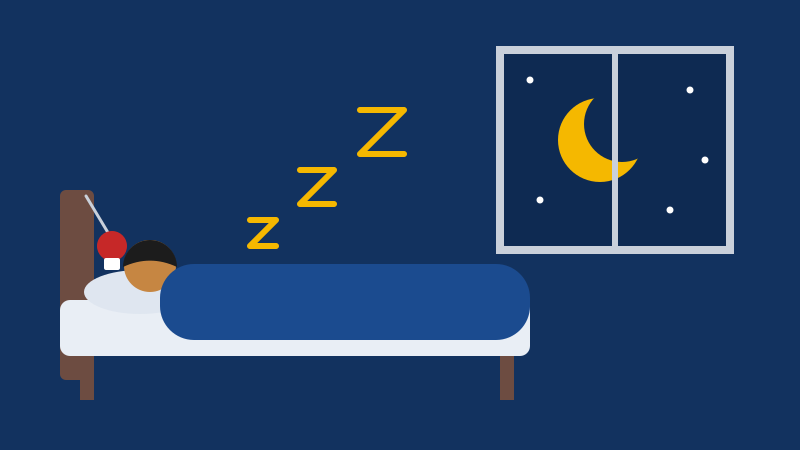

Treinar luta ajuda a dormir melhor e a aliviar o estresse

Quem chega à academia depois de um dia puxado costuma sair dizendo a mesma coisa: a cabeça ficou mais leve. Essa sensação tem explicação, e ela continua depois que o treino acaba.
O que acontece no corpo durante o treino
Em uma aula de luta, o coração acelera, os músculos trabalham em sequência e a respiração entra no ritmo dos golpes. O corpo gasta energia e libera substâncias ligadas à sensação de bem-estar. A tensão acumulada no dia, que ficaria guardada nos ombros e na mandíbula, encontra uma saída no saco de pancada.
Foco total: uma pausa para a mente
Na luta não dá para ficar pensando no boleto enquanto o parceiro está na sua frente. Prestar atenção no próprio movimento, na respiração e no outro funciona como uma pausa nas preocupações. Muitos alunos descrevem o treino como o único momento do dia em que conseguem desligar o celular e a cabeça ao mesmo tempo.
Treino e sono
A prática regular de atividade física está associada a um sono de melhor qualidade. Para aproveitar esse efeito, a dica é manter a constância: treinar duas ou três vezes por semana faz mais diferença do que um treino muito puxado de vez em quando. Se você dorme cedo, prefira não fazer os treinos mais intensos logo antes de deitar e use a volta à calma, com alongamento e respiração, para desacelerar.
Muita gente chega aqui pela luta e fica pelo que ela faz pela cabeça. Depois de algumas semanas, os alunos contam que estão dormindo melhor e chegando mais calmos em casa.
Quanto treinar?
A Organização Mundial da Saúde (OMS) recomenda que adultos façam de 150 a 300 minutos de atividade física moderada por semana, ou de 75 a 150 minutos de atividade intensa. Para crianças e adolescentes, a recomendação é uma média de 60 minutos por dia de atividade moderada a intensa. Três aulas de uma hora por semana já colocam um adulto dentro da faixa recomendada.
Cuidados importantes
Comece no seu ritmo e conte ao professor sobre lesões, dores ou problemas de saúde. O treino ajuda, mas não substitui o acompanhamento médico ou psicológico: se o estresse ou a insônia estão atrapalhando a sua rotina, procure a Unidade Básica de Saúde (UBS) mais próxima.
Fontes
- BULL, F. C. et al. World Health Organization 2020 guidelines on physical activity and sedentary behaviour. British Journal of Sports Medicine, v. 54, n. 24, p. 1451-1462, 2020. Disponível em: https://doi.org/10.1136/bjsports-2020-102955.
- BRASIL. Ministério da Saúde. Guia de Atividade Física para a População Brasileira. Brasília: Ministério da Saúde, 2021. Disponível em: https://bvsms.saude.gov.br/bvs/publicacoes/guia_atividade_fisica_populacao_brasileira.pdf.